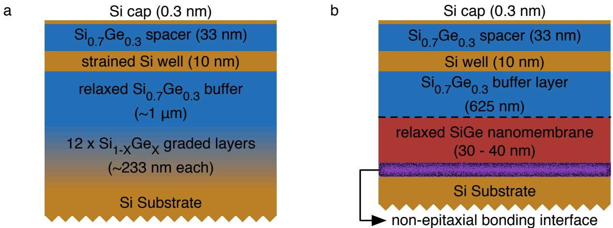
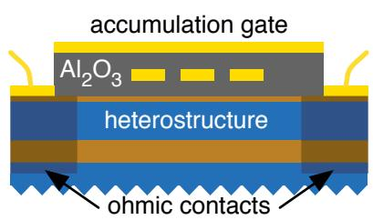
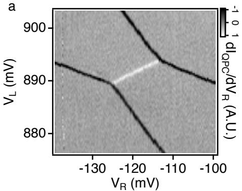
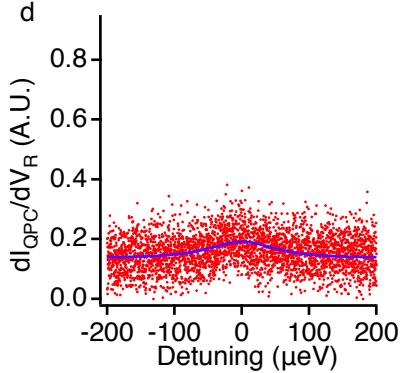

位错的问题与弹性的解法
容错量子计算可能需要 个同时调好的比特，而应变渐变异质结的不均匀性恰在单比特尺度：三类已被充分研究的晶圆不均匀——横向应变变化（应变渐变结构在 内有 的应变起伏，直接改变带隙错位）、镶嵌结构（晶格矢量倾斜，微米尺度即可影响自旋比特）、界面原子级无序（含单原子台阶，可显著压低 S–T 劈裂）——全部源自应变渐变过程必然埋入的失配位错。渐变再慢也只能降低位错密度与聚束，无法消除。
液相释放（liquid release）弹性弛豫绕开了位错：

两条技术路线对照：(a) 传统应变渐变——缓慢提高 Ge 浓度生成弛豫 SiGe 缓冲层，必然埋下失配位错网络（三类晶圆不均匀的共同根源），其上再长 SiGe 缓冲/应变 Si 阱/间隔层/帽层；(b) 纳米膜路线——虚线以下先在 SOI 上长亚临界厚度 SiGe、液相释放并弹性弛豫、转移到新 Si 承片形成非外延键合界面，再在其上用 CVD 继续外延完整堆叠；膜内没有任何新增位错。图源：Knapp et al. (2016), Fig. 1。流程分四步：在 SOI 上生长厚度低于失配位错临界厚度的单晶 SiGe；经 HF、KOH 与水浸释放到液体中；脱离刚性衬底的膜弹性弛豫到自然晶格常数；转移到新的 Si 承片上（形成非外延键合界面），随后二次外延出 SiGe 缓冲、Si 量子阱、SiGe 间隔层与 Si 帽层。微拉曼谱证明转移膜异质结的横向应变变化小于常规应变渐变结构；先前工作已在转移膜上做出迁移率超过 （载流子密度 ）的二维电子气——原则上足以支撑栅控量子点。剩余的疑虑正是本词条的实验对象：湿法转移引入的非外延界面（距量子阱 625 nm）是否会破坏单电子器件的可调性与稳定性？
器件：全栅诱导的双层栅双量子点

器件截面：二次外延堆叠上 ALD 10 nm Al₂O₃，欧姆接触区注入 ³¹P（）后覆 Ti/Au；下层细栅含两个电荷传感 QPC、四个势垒栅 B1–4、带射频的左右 plunger（L/R）与控制点间隧穿的 T/M 栅，再经 80 nm Al₂O₃ 隔出上层积累栅（PL/PR/A）。有源区完全无掺杂——载流子全部由栅诱导，消除一个关键电荷噪声源。图源：Knapp et al. (2016), Fig. 2。器件故意做成”考验界面”的形态：所有载流子由栅诱导、有源区无掺杂。光学尺度上纳米膜可见撕裂与褶皱（液相释放与清洗步骤所致，作者指出调节超声功率本可避免），器件被精心安放在膜的干净均匀区域。
单量子点：磁谱学与脉冲谱学
右侧单点（RD）的输运测量给出大量库仑菱形，无明显背景电荷重排——纳米膜提供的背景电荷环境足够稳定。电荷传感磁谱学显示：0→1 电子跃迁随面内磁场（0–1.5 T）向更负栅压移动（自旋向下电子装载）；1→2 电子跃迁在 0–0.38 T 向高栅压移动（单自旋→单态）、0.38–1.5 T 转回低栅压（单自旋→ 三重态）——0.38 T 的 S/ 交点对应零场 S–T 劈裂 44 µeV，与常规应变渐变异质结上的数值相当。栅压-能量杠杆臂由跃迁线斜率给出（ 与 ）。
脉冲栅谱学（420 ns/1 MHz 与 800 ns/500 kHz 方波）进一步给出：最低单电子激发在基态之上 56 µeV（与 Si/SiGe 器件中谷型激发一致，即谷劈裂的下界）；最低双电子激发在 50 µeV（与 S–T 劈裂自洽）。0 电子构型还存在一条”装载线”延长线，提示点内有闭壳层。
双量子点：隧穿耦合的大范围调控

双点稳定图（ V，弱耦合）：暗线为点-库跃迁，白线为极化线——隧穿率低、寿命展宽小，极化线锐利； V 时极化线因强寿命展宽几乎不可见、点-库线在交汇处明显圆化。图源：Knapp et al. (2016), Fig. 4。点间隧穿由中间栅 M 控制。隧穿耦合从极化线线型提取：把 QPC 电流写成失谐 的函数
其中 是两点间两个本征态的能差、 即点间隧穿耦合、 取电子温度 50 mK、 表征栅-QPC 串扰；对 的锁定测量拟合（杠杆臂由磁谱学标定、其余由跃迁线斜率几何推出）给出 （ V）到 （ V）。

提取的点间隧穿耦合 Δ 随中间栅电压 的变化（7 组数据）：纳米膜双量子点的隧穿耦合在近一个量级的范围内平滑可调——与非外延界面仅距 625 nm 的异质结上做出双量子点所需的全部调控能力。图源：Knapp et al. (2016), Fig. 4。最后，用上升时间 40 ps 的任意波形发生器向栅 L 施加 200 ps 方波脉冲串（20 MHz 重复率）：只有当某点靠近电荷跃迁时脉冲才诱导跃迁、改变 QPC 电流——器件在极高带宽驱动下电荷环境依然稳定，这是脉冲式自旋操控的先决条件。
与其他概念的关系
- Si/SiGe 异质结：同一家族的另一条应变弛豫路线——那里靠位错渐变、这里靠弹性释放；两词条合起来给出”虚拟衬底怎么做”的完整图景。
- 双量子点：本文是其平台验证载体（稳定图、极化线、隧穿耦合提取、脉冲稳定性）。
- 谷劈裂：单电子 56 µeV 激发即谷型激发的读出。
- 电荷噪声：有源区无掺杂 + 库仑菱形无背景电荷重排，说明转移界面未引入可观测电荷陷阱。
- 界面缺陷：非外延键合界面是受控程度最低的界面，本文给出”625 nm 距离足够远”的实证边界。
参考文献
- Knapp, T. J., Mohr, R. T., Li, Y. S., Thorgrimsson, B., Foote, R. H., Wu, X., Ward, D. R., Savage, D. E., Lagally, M. G., Friesen, M., Coppersmith, S. N., Eriksson, M. A. Characterization of a gate-defined double quantum dot in a Si/SiGe nanomembrane. Nanotechnology 27, 154002 (2016). DOI: 10.1088/0957-4484/27/15/154002；arXiv:1510.08888（QAtlas 缓存：1510.08888）。